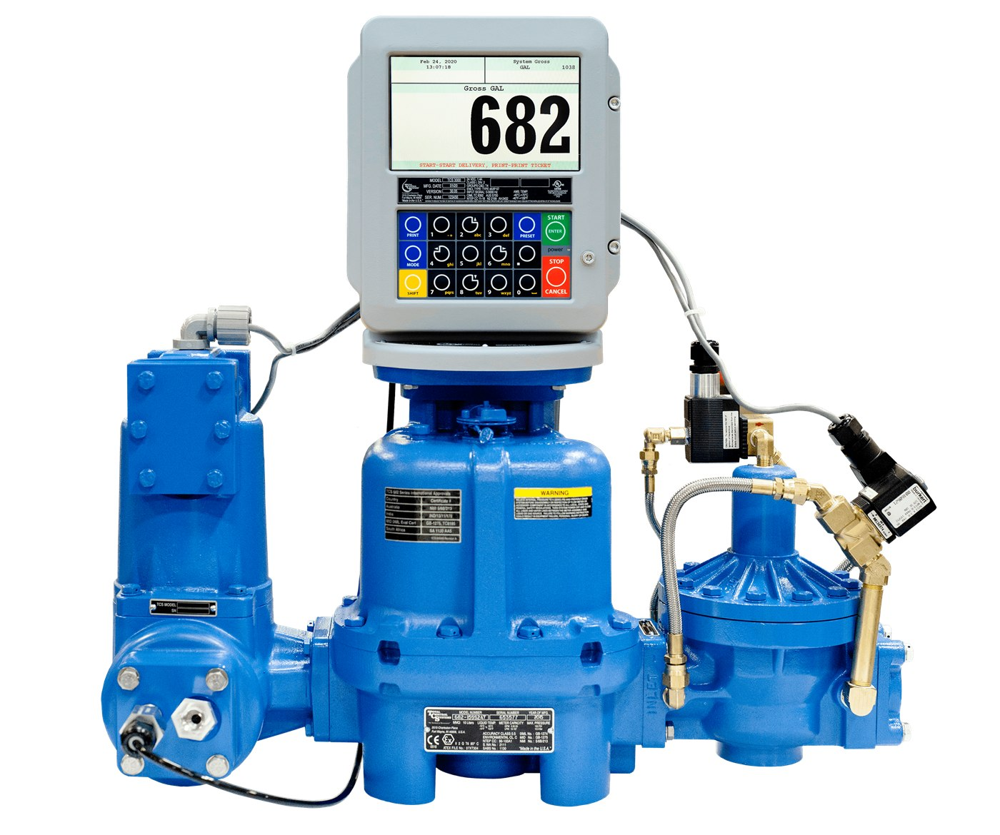

TCS
Reciprocating Piston Flow Meter — 682
Three pistons reciprocate in their own measuring chambers, much as they would in a car engine, driving a sliding valve through one smooth mechanical motion. That motion does not care what the liquid is doing — which is why the 682 holds its accuracy through changing viscosities and temperatures and through product carrying suspensions and solids.
| Flow range | 0.2–50 GPM (0.76–189 LPM) |
| Turndown ratio | 250:1 |
| Linear accuracy | To ±0.1% |
| Repeatability | To 0.01% |
| Operating pressure | 150 PSI (10.5 bar) |
| Temperature range | −40 to 160°F (−40 to 71°C) |
| Viscosity range | To 50,000 SSU (11,000 cPs) |
| Connections | 1½" NPT companion flanges |
| Warranty | 10 years (5 on LPG) |
Body material
AluminiumDuctile ironStainless steel
Meter types
SPSPASPDAFSSSSDLP
Optional connections
1" & 2" NPTBSPTSlip weldANSI flanges